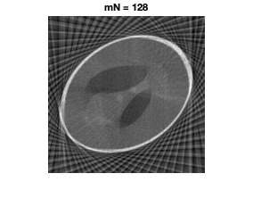

Contents
Shreyas Pimpalgaonkar - Angle estimation for tomography with unknown angles
clc;clear all; close all ; rng(0,'twister') h = 256 ; mN = 512 ; % Number of angles m = 4 ; N = mN/m ; % Final number of angles w=h; img = phantom (h) ; angles = linspace(0,180,mN) ; angles = angles(randperm(size(angles,2))) ;
Experiment with different number of angles
for mn=[128,512,1024] run_diff_angles(img,mn,140) ; pause(1) ; end
Noiseless experiment for different epsilon
figure; imshow(img,[]) ; title('Original image') ; pause(1) ; X = radon(img,angles,500) ; for epsilon = [1,50,150,200] out = perform_graph_laplacian(X,angles,mN,N,m,epsilon); figure; imshow(out,[]) ; title (['epsilon = ',num2str(epsilon)]) ; pause(1); end
Testing for different noise variances
Clearly on increasing the noise variance the algorithm does badly in case of high noise
for noise_variance=[0.05,0.1,0.5] noisy_img = img + noise_variance * randn(size(img)) ; X = radon(noisy_img,angles,500) ; out = perform_graph_laplacian(X,angles,mN,N,m,140); figure; subplot(1,2,1) ; imshow(noisy_img,[]) ; title(['sigma=',num2str(noise_variance)]) ; subplot(1,2,2) ; imshow(out,[]) ; title ('Reconstructed image') ; pause(1) ; end
Running algorithm on brain images
Chosen the best epsilon
load brain_image ; brain = imageData .* imageMask ; figure; imshow(brain,[]); title('Original image') ; pause(1) ; for angles = [128,256,512,1024] run_diff_angles(brain,angles,480) ; pause(1) ; end